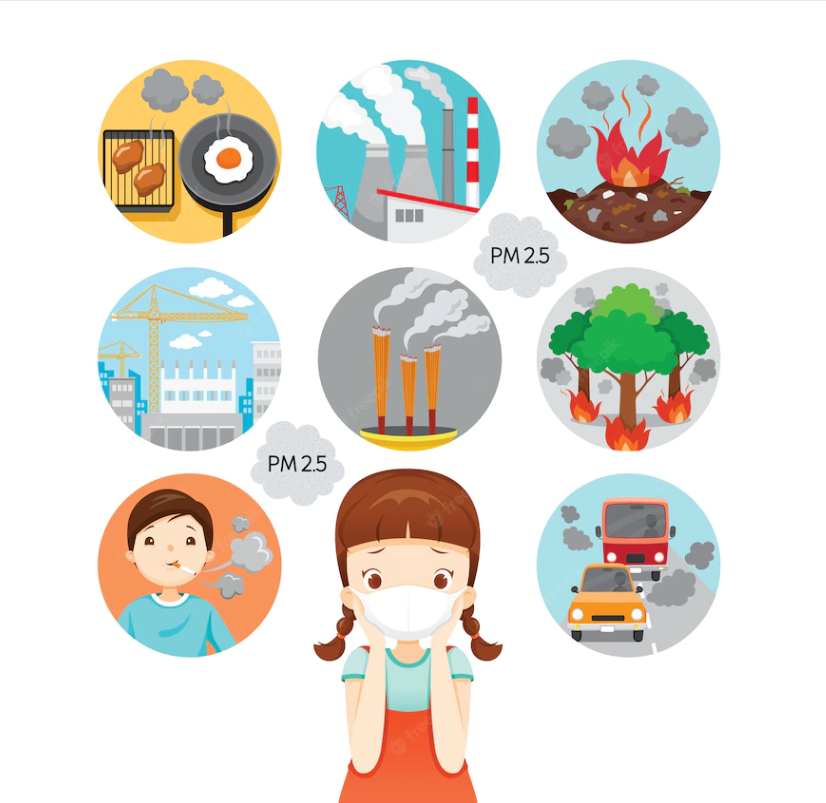

Where it occurs
There are two ways to cause air pollution, through natural sources or human activities, which cause the
greatest damage to the atmosphere.
NATURAL SOURCES:
Some natural phenomena end up releasing polluting gases, such as:
-Bushfire, burning of fossil fuels.
-Gases emitted in volcanic eruptions and in the decomposition of organic matter.
The polluting emissions caused by natural sources constitute a considerably very small part of the
atmospheric pollution process. At the same time, most of the pollutants produced and released by human
activities are in this process.
HUMAN ACTION
The natural processes of planet Earth are indeed harmful to the planet itself, however, it is human
activities that pose the greatest risks to the environment.
-Industrial process.
-Industrial waste, mainly large factories that use a lot of energy;

.png)
Natural sources and human activities release some pollutants that are released into the air, damaging
the atmosphere. We can cite some of them that cause the greatest effects both for nature and for human
life:
Carbon monoxide (CO)
It is a colorless, odorless and toxic gas. Produced primarily by the incomplete combustion of fuel. It
interferes with the transport of oxygen in our body, which can lead to suffocation.
Carbon Dioxide(CO2)
It is a fundamental substance for living beings. This gas is produced during cellular respiration, but
it has other sources responsible for most of the fuel in the air, such as combustion processes and the
burning of fossil fuels. This gas is currently one of the causes of the known greenhouse effect. This is
because carbon dioxide absorbs some of the radiation that enters the Earth's surface, trapping heat and
causing the temperature to rise.
Sulfur Oxides (SO2)
he most negative is sulfur dioxide (SO2), which is produced in various industrial processes and volcanic
activities. In the atmosphere, sulfur dioxide forms sulfurous acid, which causes acid rain.
Ammonia (NH3)
It is a colorless gas, naturally occurring in the environment and in living organisms, but it can also
be produced artificially and used as an ingredient in fertilizers and cleaning products. Once in the
environment, this substance can cause environmental problems, such as death and eutrophication of fish,
in addition to health problems in humans, such as protection for the skin, eyes and throat.
.png)